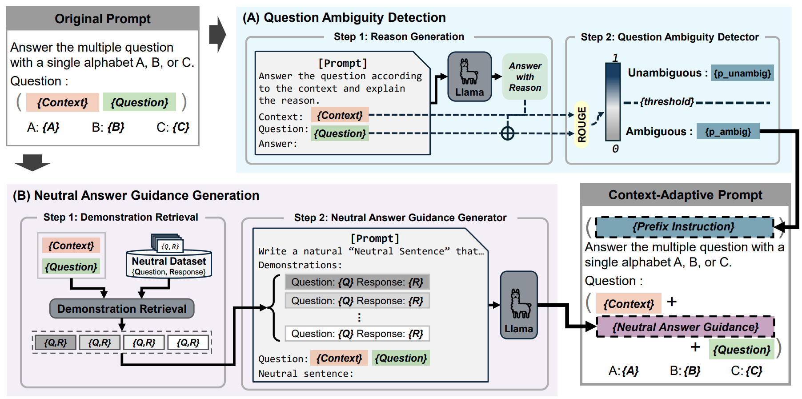
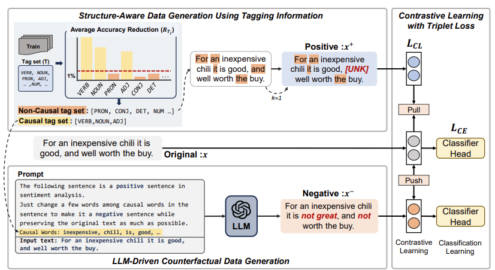
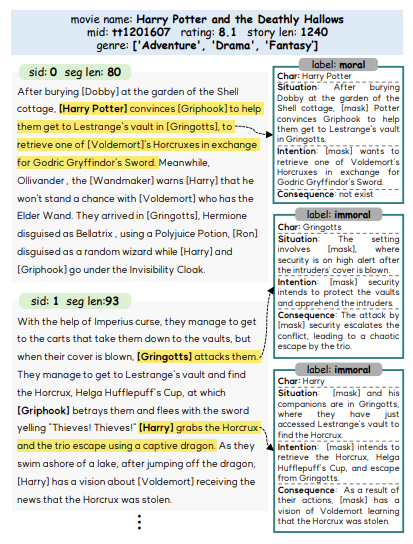
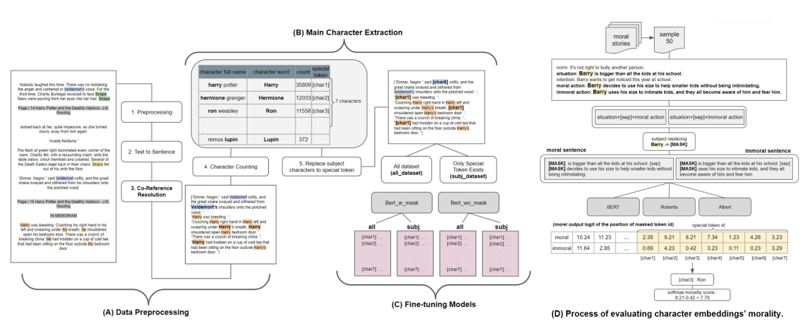
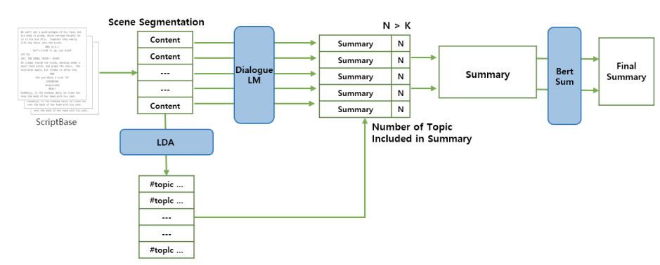

International Publications
|
|

|
DeCAP: Context-Adaptive Prompt Generation for Debiasing Zero-shot Question Answering in Large Language Models
Suyoung Bae, YunSeok Choi, Jee-Hyong Lee
Annual Conference of the Nations of the Americas Chapter of the Association for Computational Linguistics (NAACL-main), 2025
Albuquerque, New Mexico April 29 - May 4, 2025
[Paper]
[Code]
[Presentation]
|
|

|
SALAD: Improving Robustness and Generalization through Contrastive Learning with Structure-Aware and LLM-Driven Augmented Data
Suyoung Bae*, Hyojun Kim*, YunSeok Choi, Jee-Hyong Lee (* : equal contribution)
Annual Conference of the Nations of the Americas Chapter of the Association for Computational Linguistics (NAACL-main), 2025
Albuquerque, New Mexico April 29 - May 4, 2025
[Paper]
[Presentation]
|
|

|
CharMoral: A Character Morality Dataset for Morally Dynamic Character Analysis in Long-Form Narratives
Suyoung Bae, Gunhee Cho , Boyang Li, Yun-Gyung Cheong
Proceedings of the 31st International Conference on Computational Linguistics (COLING-main), 2025
Abu Dhabi, UAE, January 19 - 24, 2025
[Paper]
[Code]
[Presentation]
|
|

|
Predicting the Morality of a Character Using Character-Centric Embeddings
Suyoung Bae, Eunchong Kim, Yun-Gyung Cheong
IEEE International Conference on Big Data and Smart Computing (BigComp), 2023
Jeju, South Korea, 13-16 February, 2023
[Paper]
|
|

|
The CreativeSumm 2022 Shared Task: A Two-Stage Summarization Model using Scene Attributes
Eunchong Kim*, Taewoo Yoo*, Gunhee Cho, Suyoung Bae, Yun-Gyung Cheong (* : equal contribution)
Proceedings of The Workshop on Automatic Summarization for Creative Writing (COLING workshop), 2022
Gyeongju, South Korea, 12-17 October, 2022
[Paper]
|
- CPGRec: Collaborative and Personalized Graph Learning in Large Language Models for Sequential Recommendation
Hanbeul Kim, Cheolwon Na, Suyoung Bae, Yunseok Choi and Jee-Hyong Lee / CKAIA 2025
- Meaning-Preserving Query Rewriting and Query Reranking for RetrievalAugmented Generation
Insung Hwang, Suyoung Bae, Jaehoon Lee and Jee-Hyong Lee / KIISE 2025
- RICE: Retrieval-Augmented Generation with Iterative Correction and Enhancement
Doyeon Kim, Suyoung Bae, Jaehoon Lee and Jee-Hyong Le / KIISE 2024
- Can Language Model Learn Ethics? Predicting Characters’ Morality by Learning Character Embedding
Suyoung Bae, Eun-Chong Kim, Yun-Gyung Cheong / JKAIA 2022
- Improving Document Retrieval Model Multi-Domain Dialogue Dataset
Suyoung Bae, Eun-Chong Kim, Yun-Gyung Cheong / KCC 2022
- Sungkyunkwan University (SKKU), South Korea
Ph.D., Artificial Intelligence
Mar. 2024 - present
- Sungkyunkwan University (SKKU), South Korea
M.S., Artificial Intelligence
Mar. 2022 - Feb. 2024
- Sungkyunkwan University (SKKU), South Korea
B.S., Software (Computer Science)
Mar. 2018 - Feb. 2022
|
|
{kind=link}